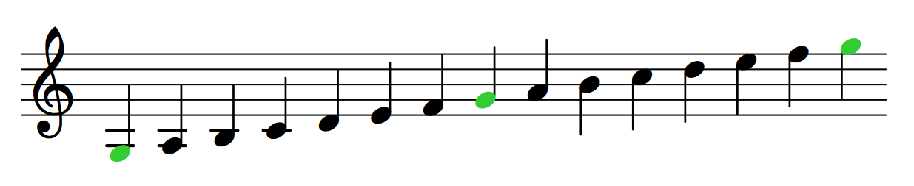
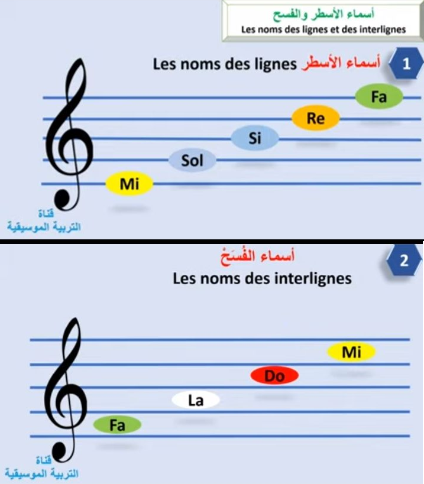
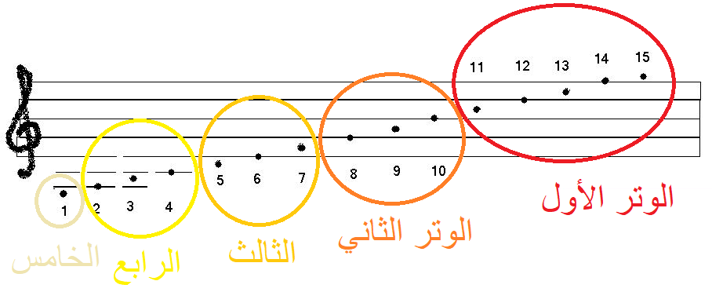
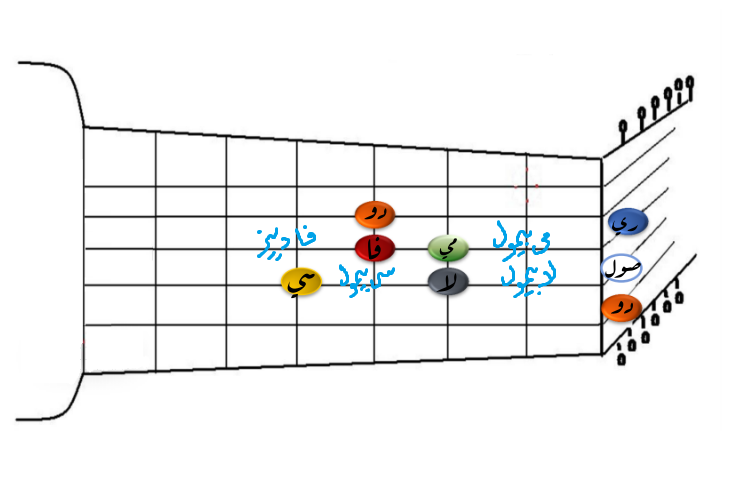

بحمد الله، تعلمت الكثير عن آلة العود من خلال اليوتيوب. أضع بين أيديكم أساسيات هذا العلم و المصادر التي وجدتها، علمًا بأني لا أنصح بتعلم الأساسيات من اليوتيوب للسبب التالي: معظمهم غثيثون مهتمون بالاستعراض أكثر من التعليم و هي مشكلة في اليوتيوب عمومًا إلا من رحم ربي. كما أنني ذهبت لأهل الجيتار و البيانو لفهم بعض أساسيات الموسيقى التي بخل علي بها أولئك الغثيثون و تعلمت قليلًا و تهت كثيرًا لاختلاف تلك اللآلات و المصطلحات الموسيقية. و أخيرًا وجد ضالتي عند استاذين (كلاهما يسكنان الرياض) يعتد بعلمهم أذكرهم هنا:
الاستاذ فاروق درويشة
الاستاذ أبو رامي
كلما زادت شدة الوتر أو قصر طوله، كلما كان الصوت أكثر حدة و العكس صحيح. يتحكم العازف بكلا هاتين الخاصيتين من خلال العزف و وزن (أو “دوزنة”) العود. و هناك عوامل أخرى تعود للعود نفسه و لا علاقة للعازف بها، مثل وزن الوتر بالنسبة الى طوله (الكثافة الخطية) و نوع خشب العود و أبعاده. انظر هنا للاستزادة (الرابط بالانجليزية) ومن ناحية فيزيائية، تعبر حدة الصوت عن تردد الموجات الصوتية الخارجة من ضرب الأوتار، بحيث كلما كان الصوت حادّا كان التردد أعلى و العكس صحيح. لذا، نستطيع أن نقول “التردد” تعبيرًا عن حدة الصوت.
العود الاعتيادي له خمسة أوتار (و هذه مهمة لمن قرر أن يتعلم من اليوتيوب مثلي). لا تختلف الأربعة الأوتار الأولى منه (من الأسفل) في جميع الأعواد. لكن هناك يغير في وزن الوتر الخامس و من يضيف وترًا سادسًا أو أكثر. في كل الأحوال، يزداد التردد بالنزول من الأوتار العليا الى السفلى أو الاتجاه من زند العود نحو صدر العود، كما هو واضح لكل من مسك عودًا من قبل.
أولًا الموسيقى عبارة عن شيئين، نغمة و زمن. سنتحدث عن النغمات هنا. يقوم علم موسيقى الآلات الوترية كله على الظاهرة التالية: عندما تضرب وترًا، نزولًا أو صعودًا بالتردد، ستجد أن هناك منطقتين لهما نفس “الرنّة”، حسبما لاحظ الأقدمون، و لها نفس التردد (مضاعفًا صعودً أو نزولًا)، حسب أجهزة القياس الحديثة. في الموسيقى الشرقية، يسمى التردد الغليظُ “قرار”، و الحادّ “جواب”. و في آلة العود جميع النغمات لها قرار و جواب، و هناك نغمة واحدة لها جوابان، سنأتي لذلك لاحقًا. النغمات هي التالية و التي يعرفها الجميع:
دو - ري - مي - فا - صول - لا - سي - دو
قد تتساءل ما هي هذه العلامات “الأجنبية” و ما علاقة العود بها؟ هذه العلامات أتى بها راهب ايطالي من أريتسو لتسهيل دراسة الموسيقى، لكن السلالم الموسيقية (تسمى “مقامات” بالعربية) موجودة قبل ذلك بكثير، و لهذه النغمات مرادفات عربية أو فارسية لكن تستخدم بدرجة أقل، مثل: نوى عشيران كردان الخ. الموسيقى لغة عالمية و وجود كلمات مكونة من مقطع صوتي واحد يفهمها الجميع شيء جميل. لكن الإحاطة بمعاني جميع المصطلحات أفضل لأن الناس في هذا المجال يستخدمون مصطلحات مختلفة. فقد تجد مقطعًا على اليوتيوب يستخدم لفظًا معينًا، و قد تجد من يستخدم النوتة "العلمية" مثلًا، يجب أن لا تقف هذه المصطلحات عائقًا أمام القدرة على العزف. مثلًا هذا المقطوعة الجميلة لم أجدها إلا بالنوتة العلمية
نعود إلى القرار و الجواب، تسمى المسافة (الصوتية، الترددات) بينهما بالأوكتاف (من أوكت أي8 باللاتينية) لأن السلم الموسيقي الذي وصفه أرتسو مؤلف من 8 علامات موسيقية. جميع الآلات الموسيقية لها مجال أوكتافي معين، آلة العود فيها أوكتافان، بمعنى، أن هناك نغمة معينة (الصول) لها جوابان، و كل نغمة في الأوكتاف الأول لها جواب في الأوكتاف الثاني. آلة البيانو، و هي آلة وترية، فيها 8 أوكتافات. و يعبر عنها بالانجليزية بالأحرف اللاتينية أدناه.
| العربية (من اللاتينية) | الانجليزية (من الألمانية) |
|---|---|
| دو | C |
| ري | D |
| مي | E |
| فا | F |
| صول | G |
| لا | A |
| سي | B |
انظر هذا الملف يشرح أماكن العلامات بالتفصيل، و كذلك يعطي شرحًا كاملًا عن استخدام العود.
تستطيع الصعود من القرار إلى الجواب و العودة إليه بعدد لا نهائي من الطرق، لكن أي منها “موسيقي”؟ في الموسيقى الشرقية العديد من السلالم الموسيقية (فوق 300 سلم)، المستخدم الشائع منها 7 مجموعة في قولك "يرملون" "صنع بسحر" تستطيع مطالعة معلومات إضافية عن المقامات هنا. أنصح بتعلم مقام الراست و البياتي (بياتي الصول) بدايةً و بتعلم معزوفات بسيطة ثم الانتقال إلى المقامات الأخرى.
نظرة عامة على الموضوع من تقديم الاستاذ رمسيس:
المدرج الموسيقي يستخدم لجميع الآلات الموسيقية و يقرأ من اليسار إلى اليمين و لآلة العود يستخدم “مفتاح الصول” الظاهر أقصى اليسار، ثم عادة توضع بعده علامة عبارة عن رقمين فوق بعض توضح نوع الإيقاع المستخدم. اذا كنت مبتدئا، فلا تنظر إلى الإيقاع و اكتفِ بحفظ مواقع النغمات على المدرج الموسيقي.
يلاحظ في المدرج أن التردد يزداد من الأسفل إلى الأعلى، و الزمن يمثل بالمسافة الأفقية بين النغمات. النغمات هي التالي (من اليسار إلى اليمين):
صول (قرار) - لا - سي - دو - ري - مي - فا - صول (جواب) - لا - سي - دو - ري - مي - فا - صول (جواب الجواب)
موقع علامة الصول تم تبيينه في الرسمة التالية. تعتبر المسافة بين كل صول و صول عبارة عن أوكتاف واحد
في الرسومات التالية معلومات إضافية عن المدرج الموسيقي
 ذكرنا سابقًا أن الأوكتاف هو المسافة بين القرار و الجواب، و قد تم تقسيم ذلك إلى 8 نغمات بشكل متساوِ، لكن التقسيم غريب نوعًا ما، فهو لا يبدأ من الألف
C - D - E - F - G - A - B - C
اضافة إلى ذلك، إذا نظرنا إلى البيانو الذي يعطي مفتاحًا لكل نغمة (المفاتيح البيضاء)، نجد أنه يضيف أنصاف النغمات (المفاتيح السوداء)، ما يجعل عدد النغمات 12
C - C♯ - D - E♭ - E - F - F♯ - G - G♯ - A - B♭ - B - C
هذا هو التقسيم الغربي الحديث للموسيقى. و قد تم اختياره لأنه يعطي أكبر عدد من النغمات المتجانسة دون زيادة عدد النغمات داخل الأوكتاف بشكل يصعب العزف عليه. الفديو التالي يشرح هذا الموضوع بالتفصيل:
تسمى هذه ♯ دييز (من الفرنسية) أو شارب (بالانجليزية)، و هذه ♭ بيمول (ايطالية) أو فلات (انجليزية). و هما من “علامات التحويل” التي تضاف إلى النغمات الأساسية لتعني زيادة في الحدة (دييز) باتجاه الشمال و الشرق، أو التقليل منها (البيمول)، باتجاه الجنوب و الغرب على العود، بمقدار نصف نغمة، مما يعني أن كل دييز هي بيمول للنغمة التالية و وجود أكثر من اسم لنفس النغمة. كذلك لاحظ عدم وجود نصف نغمة بين بعض النغمات. السلالم الموسيقية الشرقية تتحرك بمقدار ربع نغمة، أي ستسمع عن “نصف بيمول”، و سبب ذلك أن أوتار العود غير مقسمة أصلًا إلى أنصاف نغمات كالجيتار الحديث أو البيانو، و لك أن تتحرك بحرية بين أنصاف النغمات. و هنا أقول للعازف المبتدئ: الدقة في مواضع النغمات إلى درجة الربع نغمة ليست بأهمية العلاقة النسبية بين النغمات. اذ من الصعب ايجاد المواضع الصحيحة للنغمات و أنصافها و أرباعها تمامًا، و تجوز في ذلك الزيادة الطفيفة و النقصان، لكن المهم هو العلاقات النسبية بين النغمات، فهي التي تصدر الموسيقى، كالعلاقة بين القرار و الجواب مثلًا.
ابدأ من أغاني تحبها تتميز بالسهولة، بحيث عدد النغمات في الجمل الموسيقية قليلا مثلا، ثم طالع بعض مقاطع اليوتيوب التي تشرح هذه الأغاني. العرب في اليوتيوب لا يحبون كتابة الموسيقى (قليل منهم من يكتب النغمات) و يفضلون قولها لك مباشرة، فتابع معهم و اكتب النوتات اما بالحروف أو على المدرج الموسيقى بعد أن تحفظه و حاول العزف، ثم عد إلى الفديو إذا أشكل عليك شي. ستلاحظ أن تعلم أي مقطوعة موسيقية يمر بثلاث مراحل، الأولى هي التعرف على النوتات و هي البطيئة و الصعبة، و الثانية هي عزف النوتات بإيقاع، و الثالثة هي العزف بتفنن و ارتجال بعد التمكن من التمرين.
بالنسبة لي، بدأت العزف على الأغاني بالترتيب في الجدول أدناه. أنصح بأغنية أبكي على ما جرا لي فقد بدأت العزف بها و أتقنتها بأقل من نصف ساعة, يا ناس أحبه أخذت قرابة أسبوع مع أنها كانت الثانية. الأغاني تتراوح بالسهولة و الصعوبة.
| الأغنية | المقام |
|---|---|
| أبكي على ما جرا لي | بياتي صول |
| يا ناس أحبه | بياتي ري |
| لا تضايقونه | بياتي صول |
| غني لي شوي شوي | راست |
| سلموا لي | بياتي صول |
بالتوفيق